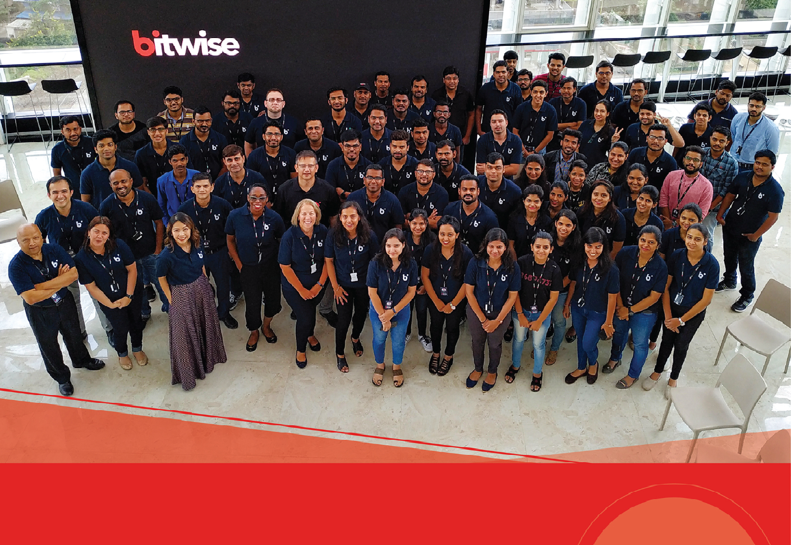

HyperScale to an insight-driven enterprise
with data-centric transformation
Let's Talk
For 25 years, Bitwise has been delivering holistic value to
organizations by bringing together talented people with deep
technology expertise, best practices from across industries, global
operational experience, powerful pre-built tools and frameworks to
create unique, data-driven solutions for competitive agility,
efficiency, and collaboration.
Data Engineering For Faster Insights
Embrace growing diversity & volume of your data to enable reliable
insights, unlock new growth paths, and increase responsiveness.
With a mix of AI, analytics, low-code/no- code, automation &
cloud, we can help you adopt modern data engineering solutions for
flexible data ingestion giving a competitive edge.
Data Lake Architecture For Enhanced Discovery
Unlock valuable insights for smarter decisions with faster,
efficient data access from numerous and diverse data sources.
Bitwise can help you accelerate your data lake journey by
delivering powerful AI- enabled solutions with proven approaches
to enhance insight discovery and analytics processes.
Data Analytics Transformation For Better Decisions
Unleash the true power of your business with AI/ML and
cloud-powered data analytics for accelerated value, agility &
resilience in a fast-expanding ecosystem of data, people &
devices. We help you harness the next-gen analytics capabilities
to augment business processes with data- driven insights at scale
and speed.
Smart Data Governance For Maximum Value
Enable a ‘single version of the truth’ across your enterprise with
comprehensive data governance customized to your business needs.
With our proven frameworks, we help you enable advanced data
controls and governance metrics for higher accountability,
traceability & security to drive efficiency and mitigate risks.
Infuse trust in the reliability of your data
Plan your data future with an executable roadmap to enable scalable
and trusted reporting of business metrics.
why BITWISE

- 25 years of delivering holistic value to businesses
- Building unique, data-driven solutions for competitive agility, efficiency & collaboration
- Bringing together talented people with deep technology expertise
- Adopting best practices from across industries with global operational experience
- Leading innovation with powerful pre-built tools & frameworks
BEHIND-THE-SCENES SUCCESS STORIES
See how Bitwise helps enterprises in overcoming complex challenges,
reinventing their value chains, and staying ahead of the
competition.
What we found most reassuring about working with Bitwise was
their great track record of retaining great talent. The first
person I worked with is still on the job. That says a lot about
their culture and their ability to foster such long
relationships.
Partnering with Bitwise has been particularly valuable to us for
two key reasons: 1) they choose the best people for the job,
focusing on their highly relevant experience and skills, 2)
their diverse technical expertise and flexible yet unique
approaches.
Throughout my time working with Bitwise, it was apparent how
much they value the client experience. I’m impressed by the
proactiveness of their people in working together to foresee
issues and come up with innovative solutions to challenges.
Reinvent data initiatives for intelligent operations
Modernize legacy data capabilities within your enterprise with
cloud, agile analytics, and mature data governance.